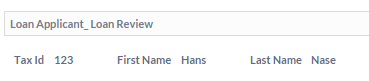

Now we execute the example to start the Document Triage with documents that we upload to the Loan Applicant process and data we enter to our Business Object. To start deploy models DocumentRequestPredefined.xpdl and DocumentTriageExample.xpdl. Then proceed with the instructions in the following sections:
Start the Loan Application process:
Now start the Document Triage process:
To view details on the process history of the Loan Application process, click the Info icon on the right side of the Loan Application node.
Figure: Open the Process History of the Loan Application
The Process Details view opens. Expand the Process History panel. In
the Activity table, you see that the Document Rendezvous - Loan activity
has the status Hibernated.
Figure: Viewing the Process History Activity Table
To complete the Document rendezvous, we drag required documents to the nodes for requested documents of the Pending Document Request node.
Now that the required documents are uploaded, the Pending Document Rendezvous can be completed. Click the icon on the right side of the Pending Document Request node to complete it.

Figure: Complete the Document Rendezvous
The process is now removed from the Pending Processes tree.
Viewing the Process History of the Loan Application again, we see that activity Document Rendezvous - Loan now is completed and activity Loan Review suspended.
Figure: Viewing the Process History Activity Table
In the Process Documents section, you see the documents that were attached during the Document Triage:
Figure: Process Attachments
In the Workflow Execution perspective open the user worklist.
Figure: Loan Review activity is available in worklist
Start the Loan Review activity.
Figure: Start the Loan Review activity
The activity displays the entered Business Object values.

Figure: Loan Review
If you select the Show Completed checkbox in the Document Triage Pending Processes screen, the completed Loan Application process is displayed.

Figure: Completed Process displayed in Document Triage screen